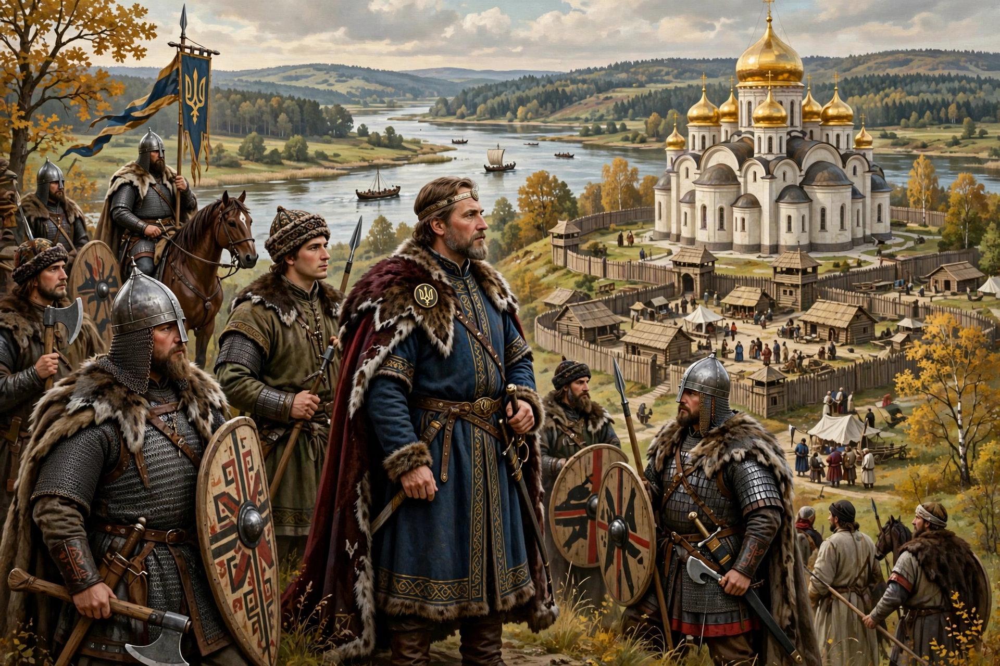

| Kievan Rus' | |
|---|---|
 | |
| Capital | Kyiv |
| Common languages | Old East Slavic, Old Church Slavonic |
| Government | Monarchy (loose federation of principalities) |
| Established | c. 880 |
| Disintegrated | 1238–1240 (Mongol invasion) |
Kievan Rus' was a loose federation of East Slavic, Baltic and Finnic peoples in Eastern and Northern Europe from the late 9th to the mid-13th century, centred on Kyiv and ruled by the Rurik dynasty. It is regarded as a predecessor state by modern Belarus, Russia and Ukraine.
According to the Primary Chronicle, the Varangian prince Oleg seized Kyiv around 882 and united Novgorod and Kyiv. Trade along the route from the Varangians to the Greeks — down the Dnieper to the Black Sea and Constantinople — enriched the state.
Under Vladimir the Great (r. 980–1015) Kievan Rus' adopted Orthodox Christianity from Byzantium in 988, a turning point for its culture, law and art. His son Yaroslav the Wise (r. 1019–1054) promulgated the Russkaya Pravda law code, built Saint Sophia Cathedral in Kyiv, and married his children into European royal houses.
Succession disputes, shifting trade routes, and pressure from steppe nomads such as the Cumans fragmented the federation into principalities including Galicia–Volhynia, Vladimir-Suzdal and the Novgorod Republic. The Mongol invasion of 1237–1240 under Batu Khan destroyed Kyiv in 1240 and ended Kievan Rus'.
Kievan Rus' developed distinctive church architecture, icon painting, chronicle writing and birch-bark literacy. Its legacy remains politically contested and culturally central in Eastern Europe.